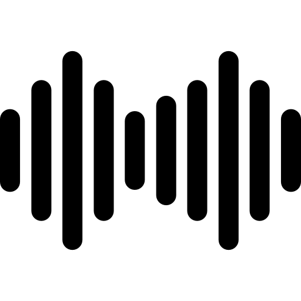
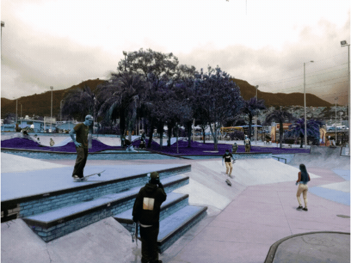
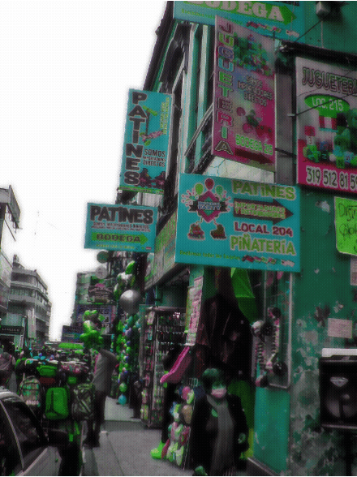
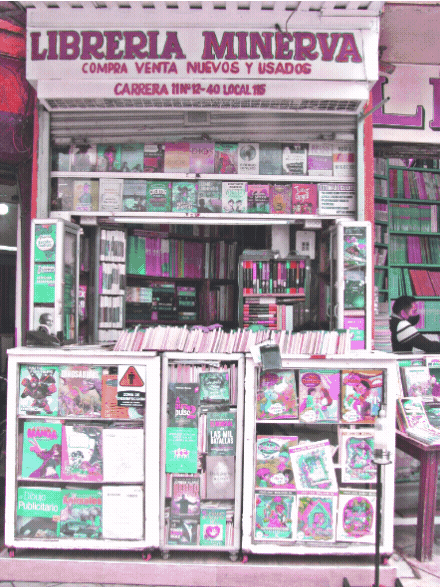
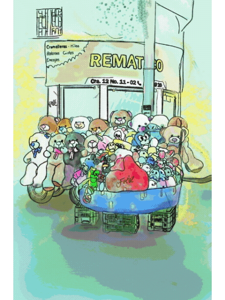

Propuesta Sonora
San Victorino Suena
Y Re-Suena
BOGOTÁ 2021
BECA PLÁSTICA SONORA
PROGRAMA DISTRITAL DE ESTIMULOS PDE-2021

SAN VICTORINO - SUENA Y RE-SUENA
Cuchavira es un colectivo de artistas colombianos residentes en la ciudad Bogotá, convocados por
movilizar el cuerpo, activar la escucha, visibilizar las nuevas dinámicas de vida a las que nos
enfrentamos en la actualidad, las transformaciones del espacio público en nuestra ciudad y reactivar
nuestras prácticas artísticas desde nuestras áreas de conocimiento que son nuestra motivación para dar vida a esta propuesta.
Nos dimos a la tarea de registrar e indagar en torno a la “nueva normalidad” que enfrenta
San Victorino, reconocer su dimensión acústica y los lenguajes sonoros que allí se desarrollan en un
ambiente comercial muy concurrido por la ciudadanía.
Este trabajo es un homenaje a vendedores informales, población flotante y comerciantes del
sector quienes se han visto gravemente afectados por las transformaciones que ha traído la pandemia y
las dificultades sociales que se intensifican en nuestra sociedad.
La plaza de San Victorino antes Galerías Antonio Nariño perduró con su vocación comercial.
Esto permitió la revitalización del sector en conjunto con el nuevo parque Metropolitano Tercer Milenio.

PARQUE METROPOLITANO - TERCER MILENIO
Tal vez la intervención social y arquitectónica más relevante de los últimos tiempos en el sector.
El parque metropolitano Tercer Milenio, forma parte de un plan por la recuperación del centro de Bogotá.
Encontramos aquí un San Victorino con cerramiento, un lugar con un umbral sonoro muy diferente (tenue)
respecto al resto del sector, sin basura, con mayor presencia de vida silvestre y flora. Un pulmón del
sector con una dinámica funcional muy distinta a lo que sucedía hace un par de décadas, desde aquí empezó
nuestra indagación sonora.

COMERCIANTES
San Victorino es un diverso mundo de susurros y gritos callejeros,
aquí convergen diferentes actores sonoros, todo tipo de timbres y fuentes sonoras se activan por
doquier: Los transeúntes, comerciantes, tráfico y transporte masivo de la ciudad hacen de este lugar
una modulante experiencia sonora.

LIBRELÍAS, ROPA, CALZADO Y TEXTILES
San Victorino se caracteriza por tener un mercado popular donde se encuentran útiles escolares a un
precio económico, cacharrerías, almacenes de ropa, calzado y textiles, venta de licores, pasajes de
transporte público, libros de segunda mano en casetas que llevan funcionando muchos años, entre otros
locales cercanos a la plaza que ofrecen multiplicidad de servicios.

JUGUETES - PAPELERÍA Y MÁS
San Victorino ofrece variedad de juguetes, artículos de piñatería, artículos para el hogar y tecnología.
En la actualidad el sector mantiene su vocación comercial por su ubicación estratégica en la ciudad.